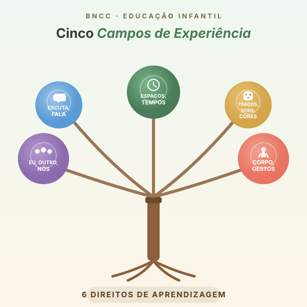

BNCC e Educação
Infantil
A criança como protagonista do aprender. Seis direitos e cinco campos de experiência encontram a mesa.

A BNCC rompe com a ideia de Educação Infantil como “preparação para a escola”. Na BNCC, a criança de 0 a 5 anos já é escola — aprende em cada interação, incluindo cada mordida em fruta nova, cada momento no refeitório, cada plantinha regada na horta.
A alimentação não é pausa do ensino. É ato de ensino intencionalmente planejado.
Os 6 direitos — e onde cada um aparece na mesa.
Conviver
Mesa como espaço de partilha e respeito às diferenças culturais.
Brincar
Horta, cozinha pedagógica e mercadinho de frutas como brincadeiras reais.
Participar
A criança participa do planejamento de cardápios e receitas.
Explorar
Texturas, cheiros, cores, sabores — oportunidade sensorial diária.
Expressar
Preferências e rejeições são comunicação, não recusa.
Conhecer-se
“O que a minha família come?” é pergunta de identidade.
Os 5 campos na Educação Infantil.
O Eu, o Outro e o Nós
Identidade, autonomia, diversidade. Respeitar diferenças alimentares é educar para a cidadania.
Corpo, Gestos e Movimentos
O corpo come, sente, degusta. Higiene das mãos como ritual pedagógico.
Traços, Sons, Cores e Formas
Pintar com suco de beterraba. Prato colorido como obra de arte coletiva.
Escuta, Fala, Pensamento
Histórias sobre alimentos. Receitas como textos instrucionais.
Espaços, Tempos, Quantidades
A horta como laboratório vivo de ciências e matemática. Ciclo planta → colheita → prato.
A SEEDF não substitui a BNCC: contextualiza.
Os 6 Direitos e os 5 Campos são a estrutura comum. O Currículo em Movimento DF acrescenta camadas locais de identidade, escuta sistemática e território — e dedica um capítulo inteiro à alimentação na Educação Infantil.
“À luz das DCNEI e da BNCC, a 2ª edição do Currículo em Movimento do Distrito Federal — Educação Infantil adota uma organização que emerge dos direitos de aprendizagem e desenvolvimento.”
SEEDF · Currículo em Movimento DF · 2ª ed., 2018, p. 60
Quadro comparativo · sete eixos de leitura
Lado a lado: o que a BNCC traz, o que o DF acrescenta e como a alimentação ancora cada eixo.
| Eixo | BNCC (MEC, 2018) | Currículo em Movimento DF · adição local | Como a alimentação entra |
|---|---|---|---|
| Eixos estruturantes | Interações e brincadeira (DCNEI, Art. 9º). | Acrescenta os Eixos Integradores: Educar/Cuidar + Brincar/Interagir (Cap. 6) — “unidade indissociável”. | A merenda integra os quatro: nutre (cuida), nomeia (educa), envolve (brinca), aproxima (interage). |
| Princípios DCNEI | Mencionados. | Detalhados em três grupos: éticos, políticos e estéticos (p. 58–59). | Ético: respeito à diversidade alimentar. Político: criticidade sobre publicidade. Estético: ludicidade no preparo. |
| Concepção de criança | Sujeito histórico de direitos. | Acrescenta a Plenarinha — escuta sistemática das crianças sobre o currículo desde 2013. | Caixa de sabores regionais e roda “o que eu gosto de comer” aplicam o método Plenarinha à alimentação. |
| Identidade local | Diversidade cultural genérica. | Cerrado, migração, povos indígenas residentes (Tapuyas/Fulni-ô, Tuxa, Cariri Xocó), quilombo Mesquita. | Pequi, buriti, cagaita, baru, jatobá no cardápio são EAN + identidade + biodiversidade. |
| Família–instituição | Parceria. | “Proximidade não pode ser esporádica, mas sim sistemática e com intencionalidade educativa” (Cap. 11, p. 46). | Caderneta “Minha Aventura Alimentar” como instrumento sistemático, não evento avulso. |
| Práticas sociais | Citadas. | Capítulo 9.1 dedicado à Alimentação (p. 41) — orientações operacionais. | Fonte normativa mais específica sobre alimentação na EI do DF — imprimir, fixar próximo ao refeitório. |
| Avaliação | Acompanhamento do desenvolvimento. | Documentação pedagógica viva — portfólios, registros, narrativas (Cap. 14). | Portfólio de EAN da turma é instrumento legítimo de avaliação na EI. |
“Os momentos de refeição não devem se tornar períodos de automatismo ou de estresse. É fundamental observar se o ambiente está em boas condições de higiene, segurança e se é propício para o exercício da autonomia e socialização.”
SEEDF, 2018, p. 41 — fonte normativa mais específica sobre alimentação na Educação Infantil do DF.As habilidades da BNCC, traduzidas em sugestões para a mesa.
A Educação Infantil cobre 0 a 5 anos e 11 meses, organizada em três etapas. Para cada habilidade da BNCC, mostramos como o Currículo em Movimento DF a interpreta e como ela se concretiza num gesto pedagógico ligado à alimentação. Total: 48 habilidades mapeadas nos 5 campos de experiência.
Bebês
0 a 1 ano e 6 meses 15 habilidades| Código · Campo | Habilidade BNCC | Leitura no Currículo DF | Sugestão pedagógica · Alimentação |
|---|---|---|---|
| EI01EO01O Eu, o Outro e o Nós | Perceber que suas ações têm efeitos nas outras crianças e nos adultos. | Construção da identidade pessoal e coletiva nos rituais de cuidado — alimentação, higiene e sono — como base afetiva previsível. | Ritual da mamadeira/papinha no colo: contato visual, voz nomeando o alimento, mesma posição. Repetir todos os dias. |
| EI01EO03O Eu, o Outro e o Nós | Interagir com crianças da mesma faixa etária e adultos ao explorar espaços, materiais, objetos, brinquedos. | Eixo Educar/Cuidar — refeitório como espaço relacional desde os primeiros meses. | Mesinha coletiva com 3 bebês juntos no momento da fruta amassada. Adulto narra reações de cada um. |
| EI01EO05O Eu, o Outro e o Nós | Reconhecer seu corpo e expressar suas sensações em momentos de alimentação, higiene, brincadeira e descanso. | Sinais corporais de fome e saciedade respeitados — não há prato a 'limpar' na EI. | Observação ativa: ao primeiro sinal de saciedade (vira o rosto, fecha a boca), encerre. Registre no diário do bebê. |
| EI01CG02Corpo, Gestos e Movimentos | Experimentar as possibilidades corporais nas brincadeiras e interações em ambientes acolhedores e desafiantes. | Exploração sensório-motora dos alimentos — tato, olfato, paladar como portas de aprendizagem. | Mesa sensorial: bandeja com banana amassada, abacate, cenoura cozida em pedaços grandes. Bebê toca, amassa, prova. |
| EI01CG04Corpo, Gestos e Movimentos | Participar do cuidado do seu corpo e da promoção do seu bem-estar. | Higiene como ritual afetivo — não como interrupção da brincadeira. | Lavar mãos do bebê antes da papinha sempre na mesma sequência, com a mesma cantiga curta. Repetição consolida o ritual. |
| EI01CG05Corpo, Gestos e Movimentos | Utilizar os movimentos de preensão, encaixe e lançamento, ampliando suas possibilidades de manuseio. | BLW (introdução alimentar guiada) supervisionado conforme indicação nutricional. | Pedaços grandes e seguros (mamão maduro, banana, cenoura cozida) ao alcance do bebê. Ele pega e leva à boca sozinho. |
| EI01TS01Traços, Sons, Cores e Formas | Explorar sons produzidos com o próprio corpo e com objetos do ambiente. | Cantigas e parlendas como repertório cultural — voz adulta como envoltório do cuidado. | Canção curta para cada fruta do cardápio: “maçã, maçã, vermelha assim…”. Mostrar a fruta real ao cantar. |
| EI01TS02Traços, Sons, Cores e Formas | Traçar marcas gráficas, em diferentes suportes, usando instrumentos riscantes e tintas. | Princípio estético: ludicidade no manuseio de materiais. | Pintura com purê de beterraba na bandeja do cadeirão. Bebê espalha com as mãos. Foto para o portfólio. |
| EI01TS03Traços, Sons, Cores e Formas | Explorar diferentes fontes sonoras e materiais para acompanhar brincadeiras cantadas, canções, músicas e melodias. | Música como mediadora dos rituais alimentares — antes de comer, ao lavar mãos, ao guardar. | Chocalhos feitos com potes e grãos do cardápio (feijão, milho). Ouvir, depois ver os mesmos grãos cozidos no almoço. |
| EI01EF01Escuta, Fala, Pensamento e Imaginação | Reconhecer quando é chamado por seu nome e reconhecer os nomes de pessoas com quem convive. | A linguagem oral como envoltório do cuidado — narrar amplia vocabulário e confiança. | Antes de cada colherada, narre em voz suave: “agora um pouquinho de abóbora… ela é macia… cheirinho doce”. Espere. |
| EI01EF03Escuta, Fala, Pensamento e Imaginação | Demonstrar interesse ao ouvir histórias lidas ou contadas, observando ilustrações e os movimentos de leitura do adulto-leitor. | Livros sensoriais e ilustrados sobre alimentos como mediação da experiência. | Livro 'A galinha ruiva' contado antes do lanche com pão. Mostre o trigo, depois o pão real. |
| EI01EF06Escuta, Fala, Pensamento e Imaginação | Comunicar-se com outras pessoas usando movimentos, gestos, balbucios, fala e outras formas de expressão. | Toda comunicação do bebê é currículo — incluindo recusa e preferência. | Registre no diário individual: o que o bebê pegou primeiro, o que rejeitou, o que pediu mais. Compartilhe com a família. |
| EI01ET01Espaços, Tempos, Quantidades, Relações e Transformações | Explorar e descobrir as propriedades de objetos e materiais (odor, sabor, textura, peso, plasticidade etc.). | O Cerrado como laboratório vivo desde a primeira infância. | Cesto dos tesouros do Cerrado: baru com casca, vagem de jatobá, folhas de buriti (sob supervisão). Cheiros e texturas naturais. |
| EI01ET05Espaços, Tempos, Quantidades, Relações e Transformações | Manipular materiais diversos e variados para comparar as diferenças e semelhanças entre eles. | Comparar e classificar — a alimentação oferece todas as transformações em escala mínima. | Bandeja de comparação: maçã inteira × maçã ralada × suco de maçã. Bebê toca os três estados. Adulto narra a transformação. |
| EI01ET06Espaços, Tempos, Quantidades, Relações e Transformações | Vivenciar diferentes ritmos, velocidades e fluxos nas interações e brincadeiras. | Tempo da refeição como tempo afetivo — não cronometrado. | Refeição sem pressa: respeite o ritmo de cada bebê. Não há horário fixo de término — há sinal de saciedade. |
Crianças bem pequenas
1 ano e 7 meses a 3 anos e 11 meses 15 habilidades| Código · Campo | Habilidade BNCC | Leitura no Currículo DF | Sugestão pedagógica · Alimentação |
|---|---|---|---|
| EI02EO01O Eu, o Outro e o Nós | Demonstrar atitudes de cuidado e solidariedade na interação com crianças e adultos. | Eixo Educar/Cuidar — servir o colega como gesto de cidadania alimentar. | Servidor da semana: criança escolhida ajuda a distribuir os pratos. Função rotativa, sem disputa. |
| EI02EO04O Eu, o Outro e o Nós | Comunicar-se com os colegas e adultos buscando compreendê-los e fazendo-se compreender. | Princípio ético do respeito à diversidade alimentar familiar. | Roda “o que tem na sua casa?”: cada criança fala sobre uma comida da família. Professor registra; nutricionista incorpora ao cardápio. |
| EI02EO06O Eu, o Outro e o Nós | Respeitar regras básicas de convívio social nas interações e brincadeiras. | O refeitório como ágora — partilhar a mesa é partilhar a palavra. | Combinados visuais do refeitório: cartaz com 4 acordos feitos pelas crianças (esperar, agradecer, experimentar, partilhar). |
| EI02CG03Corpo, Gestos e Movimentos | Explorar formas de deslocamento no espaço (pular, saltar, dançar), combinando movimentos e seguindo orientações. | Desemparedamento — aprender no quintal, na horta, no pátio. (Inst. Alana) | Caminho sensorial até o refeitório: trajeto fixo passando pela horta. Pare, cheire uma erva, siga. |
| EI02CG05Corpo, Gestos e Movimentos | Desenvolver progressivamente as habilidades manuais, adquirindo controle para desenhar, pintar, rasgar, folhear, entre outros. | O autosservimento como conquista — pegar a colher, levar à boca, derramar, recomeçar. | Buffet baixo: pratinho, colher, porção pequena ao alcance. Adulto modela. Aceite o derramamento. |
| EI02CG02Corpo, Gestos e Movimentos | Deslocar seu corpo no espaço, orientando-se por noções como em frente, atrás, no alto, embaixo, dentro, fora etc. | Brincar/Interagir — corpo no espaço inclui a cozinha pedagógica. | Visita à cozinha da escola: a merendeira mostra panelas, fogão (a distância segura), conta o preparo do dia. |
| EI02TS02Traços, Sons, Cores e Formas | Utilizar materiais variados com possibilidades de manipulação (argila, massa de modelar), explorando cores, texturas, superfícies, planos, formas e volumes. | Princípio estético: a ludicidade no preparo. Massa de pão, modelagem de frutas. | Carimbos com frutas e legumes: metade de quiabo (estrelinha), maçã (coração), batata cortada. Tinta atóxica. Depois, prove. |
| EI02TS03Traços, Sons, Cores e Formas | Utilizar diferentes fontes sonoras disponíveis no ambiente em brincadeiras cantadas, canções, músicas e melodias. | Cantigas como repertório que organiza a rotina alimentar. | Cantiga de lavar as mãos da turma — sempre a mesma, criada coletivamente. Vira marca da turma. |
| EI02EF02Escuta, Fala, Pensamento e Imaginação | Identificar e criar diferentes sons e reconhecer rimas e aliterações em cantigas de roda e textos poéticos. | Vocabulário ampliado pelos nomes dos alimentos e suas variações regionais. | Parlenda dos alimentos: “mandioca, macaxeira, aipim — três nomes, uma raiz”. Mostre a raiz real. |
| EI02EF09Escuta, Fala, Pensamento e Imaginação | Manusear diferentes instrumentos e suportes de escrita para desenhar, traçar letras e outros sinais gráficos. | Documentação pedagógica viva — registro como linguagem. | Livro coletivo 'A turma comeu hoje…': após o almoço, professor desenha rapidamente o que foi servido. Famílias folheiam. |
| EI02EF01Escuta, Fala, Pensamento e Imaginação | Dialogar com crianças e adultos, expressando seus desejos, necessidades, sentimentos e opiniões. | “Não gosto” é dado pedagógico — é comunicação, não recusa. | Roda final de 2 minutos: “o que achamos da comida hoje?”. Cada criança pode dizer “gostei” / “não gostei” sem julgamento. |
| EI02ET01Espaços, Tempos, Quantidades, Relações e Transformações | Explorar e descrever semelhanças e diferenças entre as características e propriedades dos objetos (textura, massa, tamanho). | Cerrado como currículo — frutos nativos como objeto de classificação e identidade. | Caixa de sabores do Cerrado: pequi (sem caroço exposto), baru, cagaita. Crianças tocam, cheiram, classificam por cor. |
| EI02ET04Espaços, Tempos, Quantidades, Relações e Transformações | Identificar relações espaciais (dentro, fora, em cima, embaixo) e temporais (antes, durante, depois). | Sequência do plantio ao prato — a horta materializa o tempo da espera. | Meu feijão mágico: copo com algodão, plantio coletivo. Diário fotográfico. Quando germina: “é igual ao do almoço!” |
| EI02ET07Espaços, Tempos, Quantidades, Relações e Transformações | Contar oralmente objetos, pessoas, livros etc., em contextos diversos. | Matemática contextualizada na rotina alimentar. | Contagem das frutas da fruteira da semana. “Quantas bananas? E maçãs? Qual tem mais?” |
| EI02ET05Espaços, Tempos, Quantidades, Relações e Transformações | Classificar objetos, considerando determinado atributo (tamanho, peso, cor, forma etc.). | Classificação NOVA introduzida ludicamente — descasque mais, desembale menos. | Jogo dos descasca-desembala: separar em duas cestas — “tem casca natural” × “tem embalagem industrial”. Conversar sem moralismo. |
Crianças pequenas
4 a 5 anos e 11 meses 18 habilidades| Código · Campo | Habilidade BNCC | Leitura no Currículo DF | Sugestão pedagógica · Alimentação |
|---|---|---|---|
| EI03EO02O Eu, o Outro e o Nós | Agir de maneira independente, com confiança em suas capacidades, reconhecendo suas conquistas e limitações. | Plenarinha alimentar — escuta sistemática das crianças sobre o cardápio (SEEDF, desde 2013). | Plenarinha do cardápio: roda mensal em que cada criança opina. Nutricionista visita, ouve e devolve em ações concretas. |
| EI03EO04O Eu, o Outro e o Nós | Comunicar suas ideias e sentimentos a pessoas e grupos diversos. | Princípio político: criticidade quanto à publicidade de ultraprocessados (Inst. Alana). | Detetives da propaganda: comparar embalagens coloridas com frutas reais. “O que essa embalagem promete? E a manga, o que cumpre?” |
| EI03EO03O Eu, o Outro e o Nós | Ampliar as relações interpessoais, desenvolvendo atitudes de participação e cooperação. | Família-instituição como parceria sistemática (Cap. 11). | Visita ao produtor da RIDE/DF: articulada com a SEEDF. Crianças entrevistam o agricultor. “Este alimento veio dele para nossa escola.” |
| EI03EO06O Eu, o Outro e o Nós | Manifestar interesse e respeito por diferentes culturas e modos de vida. | Diversidade cultural alimentar do DF — povos indígenas residentes, quilombo Mesquita, migração. | Sabores de onde a gente vem: cada semana, uma família compartilha um alimento típico. Mapa do Brasil com fitas indicando origens da turma. |
| EI03CG05Corpo, Gestos e Movimentos | Coordenar suas habilidades manuais no atendimento adequado a seus interesses e necessidades em situações diversas. | Culinária pedagógica como integração dos cinco campos. | Salada de frutas coletiva: cada criança traz uma fruta. Lavam mãos com música. Com supervisão, raspam e cortam. “Nós fizemos isso!” |
| EI03CG02Corpo, Gestos e Movimentos | Demonstrar controle e adequação do uso de seu corpo em brincadeiras e jogos, escuta e reconto de histórias, atividades artísticas, entre outras possibilidades. | Desemparedamento (Inst. Alana) — corpo na natureza, na horta, no quintal. | Aula na horta: 30 min mexendo na terra, regando, colhendo. Depois, lanche ao ar livre com o que foi colhido. |
| EI03CG04Corpo, Gestos e Movimentos | Adotar hábitos de autocuidado relacionados a higiene, alimentação, conforto e aparência. | Cap. 9.1: higiene, autosservimento, mastigação como práticas sociais. | Combinados visuais para a refeição feitos pela turma: lavar mãos · servir pouco · experimentar · mastigar · agradecer. |
| EI03TS02Traços, Sons, Cores e Formas | Expressar-se livremente por meio de desenho, pintura, colagem, dobradura e escultura. | Cor é nutriente — alimentos coloridos como matéria estética. | Tintas naturais: beterraba, cúrcuma, espinafre, amora. Tema: “meu prato mais colorido”. Ao final, prove os alimentos que viraram tinta. |
| EI03TS03Traços, Sons, Cores e Formas | Reconhecer as qualidades do som (intensidade, duração, altura e timbre), utilizando-as em suas produções sonoras. | Sons da cozinha pedagógica como repertório musical. | Orquestra da cozinha: gravar 5 sons (água fervendo, faca cortando, ovo batendo, panela). Adivinhar e recriar. |
| EI03EF01Escuta, Fala, Pensamento e Imaginação | Expressar ideias, desejos e sentimentos sobre suas vivências, por meio da linguagem oral e escrita (escrita espontânea), de fotos, desenhos. | A carta como gênero textual da memória — registrar para revisitar. | Carta ao eu do futuro: em março, criança dita o que espera aprender sobre comida. Guardada em envelope. Aberta na Feira da Alimentação Saudável (16/10). |
| EI03EF04Escuta, Fala, Pensamento e Imaginação | Recontar histórias ouvidas e planejar coletivamente roteiros de vídeos e de encenações. | Narrativas do território — feijão, mandioca, pequi têm histórias culturais. | Teatro de fantoches “A jornada do feijão”: campo → caminhão → cozinha → prato. Apresentação para outra turma. |
| EI03EF09Escuta, Fala, Pensamento e Imaginação | Levantar hipóteses em relação à linguagem escrita, realizando registros de palavras e textos. | Receita como gênero textual instrucional. | Livro de receitas da turma: cada família envia uma receita simples. Crianças “escrevem” do seu jeito. Compilado e impresso para todas. |
| EI03EF06Escuta, Fala, Pensamento e Imaginação | Produzir suas próprias histórias orais e escritas (escrita espontânea), em situações com função social significativa. | Cap. 9.1: refeição como prática social — narrar é parte do ato. | Detetives dos alimentos: duplas investigam de onde vem um alimento do cardápio. Conversam com merendeira, nutricionista. Apresentam. |
| EI03ET02Espaços, Tempos, Quantidades, Relações e Transformações | Observar e descrever mudanças em diferentes materiais, resultantes de ações sobre eles, em experimentos. | Eixo Brincar/Interagir × Educar/Cuidar — horta como laboratório anual. | Horta da turma: cuidar de um canteiro. Plantar couve, alface, cenoura. Quando colhem, nutricionista inclui no almoço: “a horta está no prato hoje!” |
| EI03ET07Espaços, Tempos, Quantidades, Relações e Transformações | Relacionar números às suas respectivas quantidades e identificar o antes, o depois e o entre em uma sequência. | Matemática contextualizada — receitas como suporte de letramento numérico. | Receita medida coletiva: vitamina de banana com leite. Contam bananas, copos, colheradas. Repartem em quantos copos? |
| EI03ET08Espaços, Tempos, Quantidades, Relações e Transformações | Expressar medidas (peso, altura etc.), construindo gráficos básicos. | Avaliação como documentação pedagógica viva — a criança registra e revisita. | Mural Detetives do Sabor: a cada fruta nova, colam adesivo (gostei / experimentei / quero tentar). Gráfico cresce no ano. |
| EI03ET05Espaços, Tempos, Quantidades, Relações e Transformações | Classificar objetos e figuras de acordo com suas semelhanças e diferenças. | Classificação NOVA do Guia Alimentar (MS, 2014) — substitui a pirâmide. | Mercadinho dos 4 grupos: caixas com in natura, óleos/sal/açúcar, processados, ultraprocessados (vazios). Crianças classificam, conversam. |
| EI03ET04Espaços, Tempos, Quantidades, Relações e Transformações | Registrar observações, manipulações e medidas, usando múltiplas linguagens, em diferentes suportes. | Portfólio de EAN da turma como instrumento legítimo de avaliação na EI. | Caderno de campo do almoço: 1 vez por semana, criança escolhe um alimento do prato e registra (desenho + palavra + cheiro). |